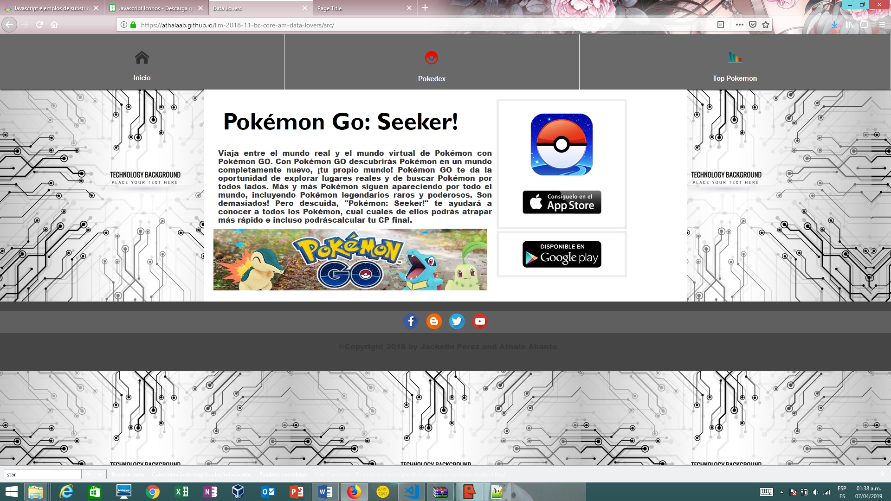

<div id="single-portfolio">
	<div id="portfolio-details" class="container">
		<a class="close-folio-item" href="#"><i class="fa fa-times"></i></a>
		
		<div class="row">
			<div class="col-sm-9">
				<div class="project-info">
					<h3>Pokemon Go</h3>
					<p> Es una página web que permite al usuario obtener información específica de los pokemones, muy similar a la de un Pokedex como: nombre del Pokémon, id , ataques, debilidades, evoluciones, etc, y datos estadísticos: legendarios, comunes, cálculo de tu nuevo CP final, son algunas de las funcionalidades que posee esta web, dirigido especialmente a usuarios que inicien por primera vez el juego de realidad virtual, Pokémon Go.</p>
				</div>
			</div>
			<div class="col-sm-3">
				<div class="project-details">
					<h3>Detalles del proyecto</h3>
					<p><span>Cliente: </span>Laboratoria</p>
					<p><span>Fecha:</span> 18 Enero 2019</p>
					<p><span>Tipo:</span> Pagina Web</p>
				</div>  
			</div>
		</div>
	</div>
</div>